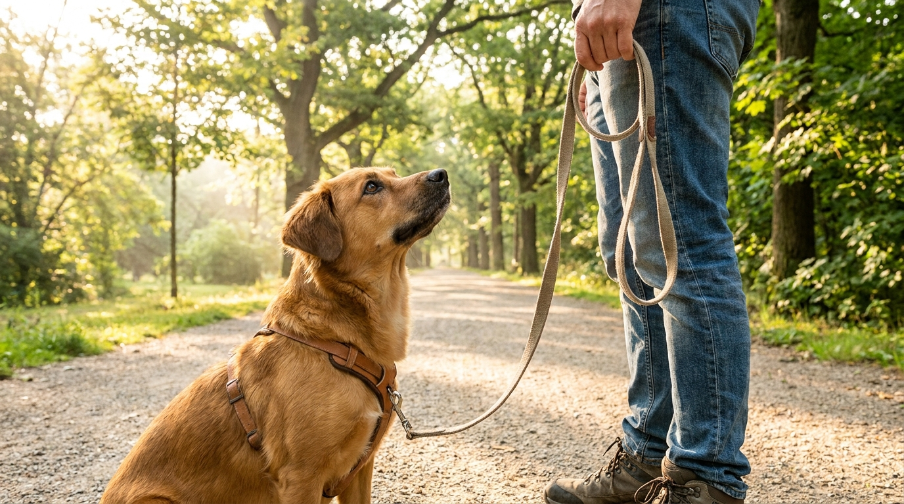

Собака тянет поводок: почему это происходит и как отучить ходить рядом

29 мая 2026 · 10 минут чтения · Дрессировка · Поведение · Собаки
Собака тянет поводок — хозяин тянет в ответ. Так формируется порочный круг, который длится годами, пока собака не состарится или хозяин не сдастся. По данным опросов, натяжение поводка — проблема номер один, с которой хозяева обращаются к кинологу. Хорошая новость: это поведение поддаётся коррекции в любом возрасте. Плохая: рывки, строгие ошейники и удавки не только не помогают, но и причиняют реальный физический вред. Объясняем, почему — и что работает вместо.
🐾 Первая помощь — всегда под рукой
AnimaLife подскажет, что делать в тревожной ситуации с питомцем ещё до визита к врачу. Откройте в один тап.
Открыть AnimaLife →Открыть в MAX →
Почему собака тянет поводок: физиология и поведение
Первое, что нужно понять: тяга за поводок — это не непослушание и не «доминирование». Это несколько независимых факторов, которые работают одновременно и взаимно усиливают друг друга.
- Оппозиционный рефлекс (oppositional reflex). При давлении на шею или тело собака инстинктивно давит в противоположную сторону. Это встроенный нейрологический рефлекс, общий для многих млекопитающих — именно на нём основана работа ездовых собак в упряжке. Чем сильнее вы тянете назад — тем сильнее собака тянет вперёд. Борьба с рывками — это борьба с физиологией.
- Разница в скорости. Комфортный темп ходьбы человека — 4–5 км/ч. Комфортный темп лёгкой рыси среднего лабрадора — 8–10 км/ч. Когда собака идёт в своём ритме — поводок натягивается автоматически, без каких-либо «намерений».
- Среда насыщена стимулами. Улица для собаки — это тысячи запахов, звуков и движений одновременно. Каждый столб, каждый куст — это информация о других животных, людях, событиях. Мозг собаки находится в режиме постоянной стимуляции, которая буквально «тянет» животное вперёд.
- Поведение подкреплено результатом. Это главная причина, почему тяга не исчезает сама. Собака тянет — и добирается до интересного куста. Действие привело к желаемому результату. Мозг записал: тянуть = получать то, что хочу. Это классическое оперантное обусловливание — случайное подкрепление поведения. Каждый раз, когда хозяин «сдаётся» и идёт вперёд при натяжении, поведение закрепляется сильнее.
Почему рывки, удавки и строгие ошейники не работают
Это не мнение — это данные поведенческих исследований и доказательной ветеринарной медицины. Методы принуждения при проблеме натяжения поводка не работают по нескольким причинам.
- Рывок в ответ на натяжение запускает тот же оппозиционный рефлекс. Вы создаёте давление — собака давит в ответ. Дополнительно: собака не понимает, что именно она должна изменить. Наказание говорит «неправильно», но не объясняет «правильно».
- Удавка (скользящий ошейник) давит на трахею, сонные артерии, блуждающий нерв, щитовидную железу. При регулярном применении накапливаются повреждения: трахеомаляция (размягчение хрящей трахеи), повышение внутриглазного давления, гипотиреоз при постоянном давлении на щитовидку. Проблемы появляются не сразу — через годы. Поэтому связь между удавкой и болезнью хозяин не замечает.
- Строгий ошейник (шип) — боль как инструмент управления. Добавляет к ситуации прогулки страх и боль. Результат: часть собак начинает бояться прогулок, часть — перенаправляет тревогу в агрессию на встречных людей и собак.
- Электрошоковый ошейник снижает общую активность (выглядит как «послушание»), но не формирует понимания правильного поведения. Исследования показывают повышение уровня кортизола и долгосрочную тревогу у собак, обученных с его применением.
- Все инструменты подавления дают краткосрочный результат через боль или страх. Убирается инструмент — поведение возвращается. Это не обучение, это управление через угрозу.
Правильная амуниция для обучения
Выбор амуниции влияет на скорость обучения. Правильный инструмент не решает проблему сам по себе, но создаёт условия для работы.
- Шлейка с передним креплением (front-clip harness). Карабин поводка крепится к кольцу на груди, а не на спине. При попытке тянуть собака автоматически разворачивается к вам — оппозиционный рефлекс физически нейтрализован. Популярные варианты, доступные в России: EasyWalk от PetSafe, Freedom No-Pull Harness, Ruffwear Front Range. Не путайте с ездовыми шлейками и обычными H-шлейками с задним креплением — там тяга только усиливается.
- Обычный плоский ошейник — параллельно, для бирки с контактами и как страховка, если шлейка расстегнётся на прогулке.
- Поводок 1,5–3 метра. Для обучения — только фиксированной длины. Рулетка создаёт непоследовательную обратную связь: сегодня можно тянуть на 5 метров, завтра — нельзя. Собака не понимает правила. Рулетка подходит для свободного выгула после того, как поведение на поводке уже сформировано.
Базовый принцип: одна установка, которая меняет всё
Без усвоения этого принципа хозяином никакие техники не дадут результата:
Натянулся поводок = прогулка прекращается.
Не рывок назад. Не «фу!». Не разворот с дёрганьем. Вы просто останавливаетесь — как столб. Замерли. Стоите. Собака не получает движения (то есть подкрепления — доступа к среде) до тех пор, пока поводок не провиснет. Как только провис — маркер («да!» или кликер) и сразу движение вперёд. Поводок провис = хорошее. Поводок натянут = ничего.
Это кажется элементарным, но требует абсолютной последовательности. Если из 10 натяжений вы останавливаетесь 9 раз, а на 10-й идёте вперёд — вы поставили собаку на вариативное подкрепление (непредсказуемое расписание). Это самый стойкий режим закрепления поведения — тяга станет ещё упорнее. Либо всегда, либо начинайте заново.
Пошаговый план обучения: от дома к улице
Обучение строится от простого к сложному. Типичная ошибка — начинать с самой сложной среды, то есть с улицы, где максимум отвлечений.
- Шаг 1: дом. Надели поводок, начали ходить по квартире. Как только натянулся — стоп, ждёте. Собака повернулась к вам или поводок провис — маркер и двигаетесь. Лакомство за взгляд на вас и слабый поводок. Сессии 5–10 минут, 2–3 раза в день.
- Шаг 2: подъезд, двор. Чуть больше стимулов. Та же механика. Если собака тянет сильнее, чем в квартире, — вы слишком быстро перешли к этому уровню. Вернитесь в дом ещё на несколько дней.
- Шаг 3: тихие улицы. Время суток имеет значение: утро в будний день — минимум людей, машин, собак. Начинайте с минимальными отвлечениями.
- Шаг 4: оживлённые места. Только когда предыдущие уровни устойчивы. Рядом с другими собаками, у магазинов, в парке в выходной.
Смена направления — альтернатива чистой остановке. Как только поводок натянулся — разворот на 180° и идёте в другую сторону, без рывка. Собака вынуждена следить за вами, чтобы не отставать. Через несколько десятков повторений начинает периодически посматривать на вас — вот это уже контакт, основа для дальнейшей работы.
Команда «рядом» и свободный поводок: в чём разница
Важное различие, которое многие хозяева не понимают:
- Команда «рядом» — чёткая позиция у левой (или правой — выберите и не меняйте) ноги, голова собаки на уровне бедра, взгляд периодически направлен на хозяина. Нужна в конкретных ситуациях: переход дороги, прохождение мимо толпы, встреча с другой собакой, когда нужна точная управляемость. Это активная концентрация — собака не может долго держать её.
- Свободный поводок — собака гуляет в радиусе длины поводка, нюхает, исследует. Но поводок не натянут. Это основной режим повседневной прогулки. Команды «рядом» нет, но есть правило: тянуть нельзя.
Не требуйте от собаки постоянного «рядом» на каждой прогулке — это изматывает животное и не даёт получить необходимую ментальную и физическую нагрузку от исследования среды.
Обнюхивание как инструмент обучения, а не «потеря контроля»
Многие хозяева воспринимают интерес собаки к запахам как непослушание — «не слушает, нюхает всё подряд». На самом деле это нейтральное и полезное поведение. Обнюхивание снижает уровень кортизола у собак, обеспечивает когнитивную нагрузку и является частью нормального поведения.
Используйте это как награду: «иди нюхай» — это ваша команда-разрешение. Собака сделала несколько шагов на слабом поводке — вы говорите «иди нюхай» и идёте к кусту, который её интересует. Доступ к запахам становится поощрением за правильную ходьбу — более мощным, чем лакомство, потому что это то, чего собака хочет прямо сейчас.
Типичные ошибки хозяев
- Тренировать только когда надо «в туалет». Это худший контекст для обучения: собака перевозбуждена, мочевой пузырь давит, цель понятна — добраться до газона. Выгуляйте сначала, затем тренируйте на «пустой» собаке.
- Непоследовательность в семье. Один член семьи останавливается при натяжении — другой идёт дальше. Для собаки это означает: «с этим человеком тянуть работает, с тем — нет». Итог: все продолжают получать тянущую собаку. Единый протокол для всех — обязателен.
- Слишком длинные сессии. Концентрация собаки на работе с поводком истощается за 10–15 минут. Больше — ошибки накапливаются, собака перестаёт усваивать. Два коротких блока по 10 минут лучше одного 30-минутного.
- Начинать, когда собака на пике возбуждения. Оделся, сразу вышел, собака рвётся бежать. В этом состоянии обучение невозможно — слишком высокий уровень возбуждения блокирует обучаемость. Подождите 5–10 минут во дворе, пока первый пик не спадёт.
- Менять технику каждую неделю. «Попробовал остановку — не помогает. Попробую смену направления. Нет, куплю другую шлейку». Нет одной волшебной техники. Любой метод требует 3–6 недель последовательного применения, чтобы начать давать устойчивый результат.
🐾 Экономьте на лишних визитах к врачу
Сначала спросите AI-ветеринара в AnimaLife — часто этого достаточно, чтобы понять, нужен ли визит к врачу.
Спросить бесплатно →Спросить в MAX →
Сроки и чего реально ожидать
Честные ориентиры, без преувеличений:
- 1–2 недели регулярной работы: собака начинает понимать механику — натяжение = стоп. Замедляется, начинает оглядываться на вас.
- 3–4 недели: устойчивый слабый поводок дома и во дворе при небольших отвлечениях.
- 6–8 недель: слабый поводок на знакомых маршрутах с умеренным трафиком.
- 10–12 недель: устойчивое поведение в городе, рядом с другими собаками, у магазинов.
Взрослая собака, которая тянула годами, потребует больше времени, чем щенок — сотни повторений, которые перепишут глубоко укоренившуюся привычку. Это не значит «невозможно» — это значит «последовательно и без спешки».
Главное, что нужно помнить: вы не боретесь с собакой и не подавляете её. Вы создаёте условия, в которых слабый поводок выгоднее натяжения. Собака тянет не потому что «доминирует» — она тянет потому что это работало. Ваша задача — сделать так, чтобы перестало работать, а правильное поведение начало приносить реальные плюсы: движение вперёд, доступ к запахам, лакомство, ваше спокойное хорошее настроение на прогулке.
← Все статьи · Открыть AnimaLife в Telegram · RSS